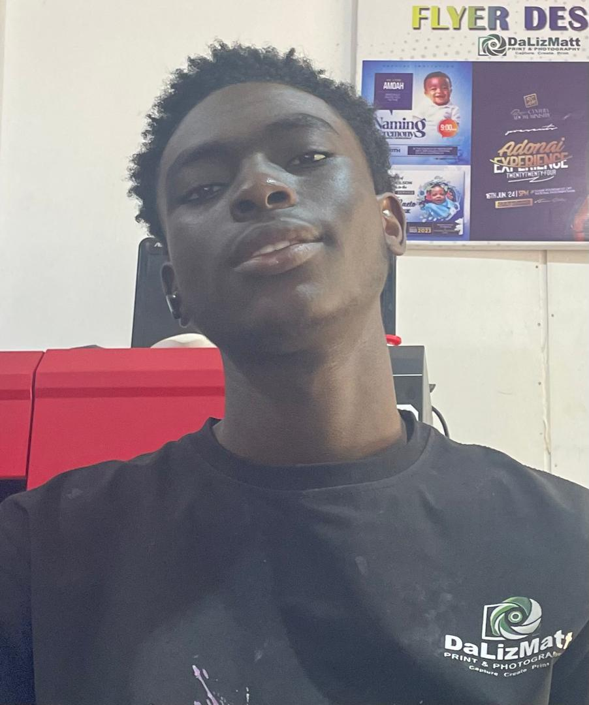
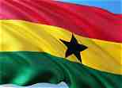

JusT mE
About mE

Hello! My name is Osei-Bonsu Jeffrey Gyamfi 😇, and I go by "mE" or JusT mE. I was born in Ghana, a beautiful country in West Africa known for its rich culture, traditions, and friendly people. I am currently not working, but I am using this time to focus on learning new skills and developing myself. I am passionate about technology and interested in how websites and applications are created. I am currently learning web development, improving my skills in HTML, CSS, and JavaScript. My learning journey has introduced me to different aspects of website design, including creating webpage layouts, styling elements, building forms, and making websites responsive. I enjoy exploring new ideas, solving problems, and challenging myself to understand how things work. Although I am still at the beginning of my web development journey, I believe that consistent practice, patience, and determination will help me become a better developer. My goal is to become a skilled web developer who can create attractive, user-friendly, and functional websites. I look forward to learning more, working on exciting projects, gaining experience, and turning my passion for technology into a successful career.
My Country

Ghana is a beautiful country located in West Africa, bordered by Côte d'Ivoire to the west, Burkina Faso to the north, Togo to the east, and the Atlantic Ocean to the south. Its capital city is Accra. Ghana gained independence from British colonial rule on March 6, 1957, becoming the first country in sub-Saharan Africa to achieve independence from colonial rule. Ghana is known for its rich cultural heritage, friendly people, colorful festivals, traditional music, and beautiful Kente cloth. The country has many ethnic groups, including the Akan, Ewe, Ga, and Dagomba, each with its own traditions and languages. English is the official language, while Twi, Ewe, Ga, Dagbani, and other local languages are widely spoken. Ghanaian food is another important part of its culture. Popular dishes include jollof rice, fufu, banku, kenkey, waakye, and tuo zaafi. These meals are often served with delicious soups, stews, fish, and vegetables. Traditional celebrations such as Homowo, Aboakyir, and the Akwasidae Festival bring communities together to celebrate their history and customs. Ghana also has many beautiful tourist attractions, including Kakum National Park, Mole National Park, Lake Volta, Cape Coast Castle, and the beaches along its coastline. The country is rich in natural resources such as gold, cocoa, bauxite, and timber. Agriculture, trade, education, and tourism play important roles in its economy. Ghana is a country with a proud history, diverse traditions, and beautiful landscapes. Its cultural heritage and the hospitality of its people make it a special place to live in and visit.